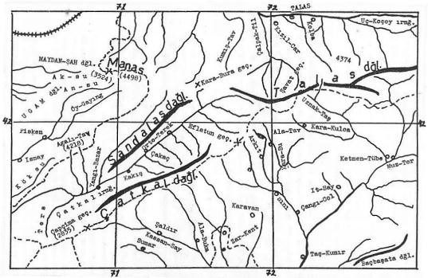
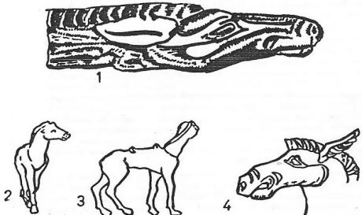

Giriş: Bu efsane, Kırgızlar arasında "Bok-Murun" adı ile söylenmektedir. Fakat aslında, yine Manas Destanının bir parçasıdır. Bok-Murun, Kaşgar Han'ı Kötököy-Han'ın bir veziri veya kumandanı olarak görülmektedir. Efsanede bu nokta açık olarak söylenmemektedir. Ancak Manas'ın Narın nehrini geçerek, Kebeti dağında konaklamış olması, bu yerlerin tanınması bakımından bize bazı ipuçları vermektedir. (Pb., V, 152). Konunun bu inceliğinden, masalı toplayan Radlof'un da pek haberi yoktur.
"Başı tuğlu hanlar, beylik yapan beyler'' deyimi, Türk içtimaî teşkilâtı bakımından bir önem taşır. Beg, "Bey" unvanı, hükümdarların yanında hizmet eden, askerin sevk ve idaresi ile mes'ul olan komutanlara verilen bir unvan idi. "Han" veya "Hanlık" ise, bir kişinin belirli bir bölge üzerindeki sonsuz egemenliğini ifade eden bir deyimdir. Büyük hanlar ve bir de esas Han'a bağlı olan küçük, bölge hanları vardı. Büyük Han'a bağlı olarak hanlık yapabilme imkânı da, "Tuğ verilme" şartına bağlı idi. Bu sebeple efsane, "Tuğlu Hanlar" deyimini kullanırken, bu bölge hanlarından söz açıyor demektir.
"At yarışları" da, Türk Mitolojisinin önemli sahnelerinden biridir. "İki türlü" at yarışı vardı. Bunlardan biri, sırf "yarışma" gayesi ile yapılan yarışlardı. Bu çeşit yarışma, düğünlerin, toyların ölü aşlarının, şenliklerin başlıca süslerinden biri idi. Diğer türlü yarışlar ise "savaşma" gayesi ile yapılırdı. Bazen iki ordu savaş için karşılaşınca, karşılıklı bir anlaşma yapılırdı. Çoğu zaman da iki taraftan birer pehlivan veya savaşçı çıkar ve temsilî bir "Savaş güreşi" yapılırdı. Hangi tarafın güreşçisi galip gelirse, o taraf zaferi elde etmiş olurdu. Bundan evvelki efsanede geçen Koşay-Han ile Yoloy-Han'ın güreşleri bunun en güzel örnekleridir. Manas-Han, Kırgızların Orta-Yüz reisi Kökçe-Han'la savaş için karşılaştığı zaman da, önce iki ordu arasında bir "savaş için at yarışı" düzenlenmiş ve bu yarış, aylarca devam etmişti.
"Savaşta yapılan at yarışları", efsanenin en önemli motiflerinden biridir. Biraz sonra bunu Kös-Kaman hikâyesinde de göstereceğiz. Burada görüldüğü gibi, Manas'ın ordusu ile Kaşgarlı Bok-Murun'un orduları karşılaşıyorlar ve savaştan önce bir at yarışması yapılması üzerinde anlaşıyorlar ve bu yarış da üç ay sürüyor (Pb., V, s. 189).
"Sarı at" veya sarı inekle, sarı devenin kesilmesi de Türk mitolojisinin motiflerinden biridir. Sarı renkte hayvanların etlerinin daha iyi bir vasıfta olduğundan mı; yoksa altın gibi sarı renklerin, kutsal oluşundan veya soylu tabakayı gösterdiğinden dolayı mı, büyük saygı ziyafetlerinde sarı hayvanların kesildiğini bilmiyoruz.
"Kızıl-Tuğ" ve "Boz-Otağ" Kaşgar Beyi Bok-Murun'un bir özelliği olarak gösteriliyor. Hâlbuki "Kırmızı bayrak" bir "Savaş bayrağı"dır. Manas'ın bayrağı "Ak-Bayrak" idi. Ak sözü burada, daha ziyade manevî anlamda kullanılmıştır. Yoksa bu, bayrağın renginin beyaz olduğundan ileri gelmemektedir. Manas'ın otağı için, genel olarak "Ak-Otağ", ak-çadır, ak-ev deyimleri kullanılırdı. Bok-Murun'un otağına da "Boz-Otağ" denmekle, efsanede onun içtimaî derecesi biraz daha düşürülmüş oluyordu.
"Kara-Bayraklı" bu efsanelerde, genel olarak Müslüman olmayan kâfir hanları için kullanılan bir deyimdir. Meselâ burada Nes-Kara Han, "Kara-Bayraklı" bir handır. Onun emrinde müslüman olmayan Kırgızlar da vardı.
"Savaş güreşi", yukarıda söylediğimiz savaşta yapılan at yarışlarının başka türlü bir gösterisidir. Manas-Han ile Nogay-Han'ı Yoloy- Han'ın orduları karşılaşınca, iki ordu arasında henüz savaş başlamadan önce, iki düşman arasında bir güreş müsabakası tertip ediliyor. Bu tür güreşlerde, İran’daki Şahnâme'nin tesirlerini de görebiliriz. Çünkü Şah-nâme'de, her savaştan önce, böyle güreşlere bol bol rastlamak mümkündür. Buradaki Koşay-Han, Manas destanına göre "Tanrı ve dünya kuvvetlerini kendinde toplamış bir Alp'dır". Tıpkı, yine bir Kıpçak-Türk destanı olan Han-nâme'deki 1200 sene yaşamış olan "Ulug-Arslan" gibi, bir pehlivan ve savaşçı idi. Ulug-Arslan da, Türk savaşçılarını pes ettiren düşman kahramanlarının karşısına çıkıyor ve 1000 yaşında olmasına rağmen onları mağlup ediyordu. Koşay-Han da, beli bükük ve ihtiyar hali ile çıkmış, Yoloy-Han'ı yenmişti.

Harita 6: Manas Han’ın yaşadığı Talas ve Narın havzaları
"Demirciler", Orta Asya ve Sibirya mitolojisinin en önemli motiflerinden birini teşkil ederler. Bilindiği üzere, Sibirya destanlarında demirciler, sihirbaz ve şaman olarak görülürlerdi. İlk demirciyi de Tanrı, özel olarak yeryüzüne göndermişti. Göktürklerde ve Manas destanında "Demircilik, en şerefli ve kutsal bir meslek" olarak görülüyor. Bunun için de, Manas-Han esir olarak aldığı Yoloy-Han'ın kızlarından birini, kendi demircisine veriyor ve bu suretle ona minnettarlık hislerini ödemiş oluyordu.
Fakat harp ganimetlerinin bu şekilde bölünmesi, Töre'ye uygun değildi. Bu sebeple de Manas'ın Ulu-Hatunu Kanıkey-Hatun buna itiraz ediyor ve yeni bir bölme yapıyordu.
Eski Türk töresine göre, devletin malı ve dolayısıyla harp ganimetleri ilk önce "Hanedan" arasında bölünürdü. Altın ve gümüşü askerler, beyler ve hattâ demirci bile alabilirdi ama; bir "Han kızı", demircinin payına düşemezdi. Han-oğlu veya Han-kızı, herkesten önce, "Han'ın payı ve "ülüşü" idi.
Yoloy-Han efsanesini ayrıca vereceğiz. Fakat burada, Yoloy-kızları da Türkçe ad taşımaktadırlar.
"(Kaşgar bölgesinde ) hüküm süren, Kökötöy-Han adlı bir Han vardı. Kendisi çok ihtiyar ve artık yaşamağa gücü kalmamıştı. Bir gün hastalandı ve kan kusmağa başladı. Bu Han'ın Bok-Murun adlı da bir veziri vardı. Bok-Murun bu durumu görünce, hemen ilin içine çıktı ve bağırarak, kim varsa, eli yurdu çağırdı ve Han'ın başına topladı. Han döndü halka şöyle dedi:
- "Beni yıkan ihtiyarlığım, ızdırap veren bir de yaşım var. Ama "başı tuğlu Hanlarım", "beylik yapan" beylerim de var. Korkmayın," der. Bunu dedikten sonra da ölür.
"Çocukları, kulları, beyleri, kimi varsa ağlarlar. Ama faydası yok ki! "Bari cenaze merasimini yapalım," derler. "Bir ölü yemeği, yağ aşı verelim," derler. At yarışları düzenlerler. "Sarı develer, sarı kısraklar boğazlayalım," derler.
"Tan daha ağarmadan, güneş henüz çıkmadan, Bok-Murun, "altın süslü, kızıl tuğuyla" çıkar gelir ve yuğ aşının verileceği yerde "boz otağını" kurar. Han'ı için büyük bir tören hazırlar. Davet için de etrafa adamlar salar. Bu zamanda, davet edilen böyle bir törene gitmemek, çağırana karşı bir saygısızlık veya düşmanlık işareti olarak sayılırdı. Bunun için pehlivanlar pehlivanı, Er-Koşay'a adam salar. "Gelsin," der, benim bu yuğ aşıma. "Yok, gelmezse, benim gözüme hiç görünmesin," der.
"Her taraftan, Hanlar gelir, beyler gelir, yerler içerler. Ondan sonra da yeni Han'ın tahta çıkarılma törenine sıra gelir. Getirirler, Kökötöy-Han'ın oğlunu. Ama oğlan, bir türlü tahta çıkıp, Han olmağı kabul etmez. "Şu.., şu., yerleri almadan ve gâvurla Müslümanı yanyana getirmeden, ben Han olup tahta çıkamam," der.. Onlar onu Han yapmak için, uğraşa dursunlar. Biz gelelim Manas'a.
"Manas-Han'a da elçiler gelir ve onu yuğ aşına davet ederler. Ama Manas-Han, bu daveti kabul etmez ve ölü aşına da gitmez. Elçiler, "Nasıl bir ok kayadan dönmezse, elçiler de cevapsız gitmez," derler ve ısrar ederler. Ama Manas'ın bir bildiği vardır. Oturur, Alman-Bet'le satranç oynamağa. Elçiler de onu, hayretle, seyrede dururlar.
"Manas, bütün alplerini yanına çağırır. Narım nehrine doğru gider ve Kebeti dağında konarak, uzaktan olsun, Bok-Murun'un ölü aşı törenini izler. O sırada, gökte bir toz bulutu görülür. Manas atlanır. "Nedir," diye o tarafa gider. Uzaktan bir kalabalık görür. Atlanır, pulatlanır, görünen kalabalığa doğru gider. Birden karşıdan "kara bayraklı", kâfir Han'ı Nes-Kara görünür. Manas'la vuruşurlar. Manas onu alt eder. Nes-Kara, kara-bayrağını da bırakıp kaçmak zorunda kalır. Mündü-Burut, Sai-Burut gibi, kâfir Kırgız boyları da, soluğu onun peşinde alırlar. Bu sırada Kalmuklar da gelir, hücuma geçer ama, Manas onları birer birer yener ve hepsini katar önüne....
"Han'ı tahta çıkardıktan sonra, bu sırada Bok-Murun da Çin'e karşı akın yapar. Bu akın sırasında, savaş yapmazlar ama; savaş yerine geçecek, büyük bir at yarışı düzenlerler. Öyle bir at yarışı ki, tam üç ay sürer. Ne Manas ve ne de Bok-Murun bu yarıştan bir netice alamazlar...
"Manas-Han, dağlarda, yaylalarda dolaşırken, birden bire karşısına, Nogay Han'ı Yoloy-Han çıkar. Manas çekinir. Hafif geriler. Ama tam bu sırada soyun en yaşlısı Koşay-Han ona cesaret verir ve onunla güreşmesini tavsiye eder. Manas da, YoIoy-Han'la onun güreşmesini söyler. Bunun üzerine, pehlivanlar pehlivanı Koşay-Han şöyle cevap verir:
"Töö-Tengşer'le güreştim, geniş Kegen boyunda,
"Şenlikler yapılırken, Kenceke'nin toyunda.
"Kazılık vadisinde, Kar-Yabas-Su boyunda,
"Alp-Börü'yle güreştim, bir tek idim oyunda."
"Er-Koşay, kâfir Han'ı Nes-Kara'nın oğlu ile de güreştiğini ve onu da yendiğini söyler. Ama sonunda. "Ben neyleyim, ihtiyarladım artık, güreşemem," der ve keser atar. Bunun üzerine Manas'ın ordusundan, Kök-Koyan adlı bir çocuk çıkar. "Bırakın," der. "Yoloy- Han'la ben güreşirim," der. Bunun üzerine Koşay-Han çocuğa yaklaşır. "Ey oğlum, gönlün büyük, gücün az," der. Zorla çocuğu bu işten vaz geçirir. Koşay-Han, bakar ki olmayacak. İhtiyar hali ile, beli bükük olarak, soyunmağa başlar. Giyer Manas'ın deri kisbetini ayağına ve girer güreş meydanına. Başlarlar YoIoy-Han'Ia Koşay-Han güreşmeğe Bir ara, Yoloy-Han, Koşay'ı tuttuğu gibi yere vurur. Koşay-Han, beli bükük bükük, yerinden doğrulur kalkar ve Yoloy'a hücum eder. Tanrı artık kuvvet vermiştir Koşay'a. Onun damarlarında, Tanrının kuvveti dolaşmağa başlamıştır. Tuttuğu gibi Yoloy'u vurur yere ve bu suretle galip gelir. Koşay'ın bu zaferinden dolayı, etraftan hediyeler yağmağa başlar...
"Bu sırada Çin'de Han, Kongur-Bay adlı bir Han idi. Kongur-Bay, Manas'a hücum eder ve vuruşurlar, önce savaş alanına iki hükümdar çıkar. Birbirilerine mızrak atarak, yarışıp dövüşmeğe başlarlar. Mızraklar gökte, adeta yağmur gibi uçuşur. En sonunda Manas, Çin Han'ını yener ve ondan sonra da, savaş meydanında şöyle bağırır: "Bana güç veren Tanrıdır. 0, bana güç verdikçe, kim benimle vuruşabilir?"...
"Manas-Han, Oronggro'ların reisi Koylu-Han'ı yendikten sonra, Hokend şehrine yürür. Bu sırada Hokend üzerine Yoloy-Han'ın iki oğlu da yürüyorlardı. Yoloy-Han'ın bu iki oğlundan birinin adı, Ököm-Bolot, diğerinin de adı, Törö-Bek idi. Sir-Derya boylarına gelince, orada karşılaştılar. Aralarında, büyük bir harp oldu. Bu harp, Yar-Massar adlı yerde olmuştu. Bu savaş sırasında, Alman-Bet yaralandı...

Şekil 51: Altay ve Manas destanlarında olduğu gibi, Hun çağı Altay mezarlarında kişilik ve kutsallık verilmiş at figürleri çoktur (Rudenko, 1961, s. 277).
"Manas-Han, demircisi Tökör'e büyük bir önem verirdi. Her akına çıkmadan önce, kendi ulusu ile demirci Tökör'e gider. Kılıçlarını biletir ve tamir ettirirdi. Bu sebeple, Yoloy-Han'ı mağlûp ettikten sonra, Han'ın kızlarından birini, demircisine vermiş ve bu yolla da kendisine zaferler kazandıran demircisine karşı, vazifesini yerine getirmişti...
"Kılıç ve mızraklarını biletip, tamir ettiren Manas-Han, Yoloy-Han'ın iki kızını, karısını ve malını talamak için bir plân yaptı. Büyük bir savaştan sonra, Yoloy Han'ı yenmiş ve Han'ın kızlarını da ele geçirmişti. Bu kızlardan, Ulu-Bike'yi kendi kılıç ustası demirciye ve yine YoIay-Han'ın kızı Kişmiş'i de Alman Bet'in oğluna vermişti...
"Manas eve dönünce karısı, savaşta yapılan bu ganimet bölümünü beğenmedi. Tuttu Yoloy-Han'ın kızı Ulu-Bike'yi, kocası Manas'a verdi. Küçük kızı, Kişmiş'i de kendi oğluna aldı ve bu suretle harpte alınanlar, yine Manas'ın evinde kalmış oldu."